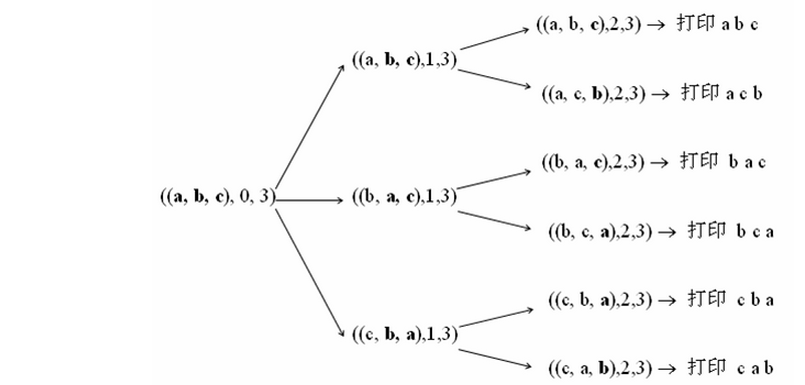

☰ 目录
参考
字符串全排列问题
字符串的全排列和组合算法
链接
牛客OJ：字符串的排列
九度OJ：http://ac.jobdu.com/problem.php?pid=1369
GitHub代码： 028-字符串的排列
CSDN题解：剑指Offer--028-字符串的排列
您也可以选择回到目录-剑指Offer--题集目录索引
题意
题目描述
输入一个字符串,按字典序打印出该字符串中字符的所有排列
例如输入字符串abc,
则打印出由字符a,b,c所能排列出来的所有字符串abc,acb,bac,bca,cab和cba。
结果请按字母顺序输出。
注意
输入一个字符串,长度不超过9(可能有字符重复),字符只包括大小写字母
样例输入
abc
BCA
样例输出
abc
acb
bac
bca
cab
cba
ABC
ACB
BAC
BCA
CAB
CBA
基于前缀码的全排列（递归）
依次从字符串中取出一个字符作为最终排列的第一个字符，对剩余字符组成的字符串生成全排列，最终结果为取出的字符和剩余子串全排列的组合。
class Solution
{
protected:
vector<string> m_res;
public:
void Permutation(string prefix, string str)
{
if(str.length() == 0)
{
//cout << prefix << endl;
m_res.push_back(prefix);
}
else
{
for(int i = 0; i < str.length(); i++)
{
Permutation(prefix+str[i], str.substr(0,i)+str.substr(i+1,str.length()));
}
}
}
vector<string> Permutation(string s)
{
m_res.clear( );
if(s.empty( ) == true)
{
return m_res;
}
Permutation("",s);
return m_res;
}
};
优点：该方法易于理解，
缺点：但无法移除重复的排列，如：s="ABA"，会生成两个“AAB”。
基于交换的全排列（递归）

由于全排列就是从第一个数字起，每个数分别与它后面的数字交换，我们先尝试加个这样的判断——如果一个数与后面的数字相同那么这两个数就不交换 了。例如abb，第一个数与后面两个数交换得bab，bba。然后abb中第二个数和第三个数相同，就不用交换了。但是对bab，第二个数和第三个数不 同，则需要交换，得到bba。由于这里的bba和开始第一个数与第三个数交换的结果相同了，因此这个方法不行。
换种思维，对abb，第一个数a与第二个数b交换得到bab，然后考虑第一个数与第三个数交换，此时由于第三个数等于第二个数，所以第一个数就不再用与第三个数交换了。再考虑bab，它的第二个数与第三个数交换可以解决bba。此时全排列生成完毕！
很明显，递归的出口，就是只剩一个字符的时候，递归的循环过程，就是从每个子串的第二个字符开始依次与第一个字符交换，然后继续处理子串。
还有一个问题要注意，就是如果字符串中有重复的字符串
这样，我们得到在全排列中去掉重复的规则：
去重的全排列就是从第一个数字起，每个数分别与它后面非重复出现的数字交换。
例如对于abc，用递归方法，把列表不断切断如‘abc’,第一次切成‘a’和‘bc’，第二次切成‘ab’和‘c’.
然后把后面的字符串中每一个都与前面的字符串最后一个作交换。
例如（'ab' 与‘c’交换就是，‘ac’和‘b’）最后再排序一下就好。
-
首先，求所有可能出现在第一个位置的字符，
-
其次，把第一个字符和其后面的字符一一交换。如下图所示，分别把第一个字符a和后面的b、c等字符交换的情形。
-
接着，固定第一个字符，求后面所有字符的排列。这个时候我们仍把后面的所有字符分成两部分：后面字符的第一个字符，以及这个字符之后的所有字符。然后把第一个字符逐一和它后面的字符交换
#include <iostream>
#include <algorithm>
#include <vector>
#include <string>
using namespace std;
// 调试开关
#define __tmain main
#ifdef __tmain
#define debug cout
#else
#define debug 0 && cout
#endif // __tmain
class Solution
{
protected:
vector<string> m_res;
public:
vector<string> Permutation(string str)
{
m_res.clear( );
if(str.empty( ) == true)
{
return m_res;
}
PermutationRecursion(str, 0);
sort(m_res.begin( ), m_res.end( ));
return m_res;
}
void PermutationRecursion(string str, int begin)
{
if(str[begin] == '\0')
{
debug <<str <<endl;
m_res.push_back(str);
}
else
{
for(int i = begin;
str[i] != '\0';
i++)
{
//debug <<str[i] <<str[begin] <<endl;
if(!HasDuplicate(str, begin, i))
{
swap(str[i], str[begin]);
debug <<"swap " <<str[i] <<"(" <<i <<")" <<" and " <<str[begin] <<"(" <<begin <<")" <<endl;
PermutationRecursion(str, begin + 1);
//copy(str.begin( ), str.degin( ) + i, ostream_iterator<char>(cout," "));
swap(str[i], str[begin]);
}
}
}
}
private:
//find duplicate of str[i] in str[k,i)
bool HasDuplicate(string& str, int k, int i) const {
for (int p = k; p < i; p++)
if (str[p] == str[i]) return true;
return false;
}
};
int __tmain( )
{
Solution solu;
solu.Permutation("abc");
return 0;
}
STL的next_permutation求全排列
用STL的next_permutation可以很方便的求一个容器的全排列
class Solution
{
public:
vector<string> Permutation(string str)
{
vector<string> res;
if(str.empty( ) == true)
{
return res;
}
sort(str.begin( ), str.end( ));
do
{
res.push_back(str);
debug <<str <<endl;
}
while(next_permutation(str.begin( ), str.end( )));
return res;
}
};